Plot UMIs per UPIa for quality control
pxContent_vs_Tau.RdPlot UMIs per UPIa for quality control
Usage
pxContent_vs_Tau(object, ...)
# S3 method for data.frame
pxContent_vs_Tau(object, group.by = NULL, ...)
# S3 method for Seurat
pxContent_vs_Tau(object, group.by = NULL, ...)Arguments
- object
A
data.frame-like object or aSeuratobject withumi_per_upia,tauandtau_typevalues- ...
Not yet implemented
- group.by
A column in the object representing a 'character' or 'factor' to group data by
See also
Other QC-plots:
CellCountPlot()
Examples
library(pixelatorR)
# Load example data as a Seurat object
pxl_file <- system.file("extdata/PBMC_10_cells",
"Sample01_test.pxl",
package = "pixelatorR")
seur_obj <- ReadMPX_Seurat(pxl_file, overwrite = TRUE)
#> ✔ Created a 'Seurat' object with 10 cells and 26 targeted surface proteins
seur_obj
#> An object of class Seurat
#> 26 features across 10 samples within 1 assay
#> Active assay: mpxCells (26 features, 26 variable features)
#> 2 layers present: counts, data
# Plot with data.frame
pxContent_vs_Tau(seur_obj[[]])

# Plot with Seurat object
pxContent_vs_Tau(seur_obj)
# Group by sample in merged data
seur_obj1 <- seur_obj2 <- seur_obj
seur_obj1$sample <- "1"
seur_obj2$sample <- "2"
seur_obj_merged <- merge(seur_obj1, seur_obj2)
#> Warning: Some cell names are duplicated across objects provided. Renaming to enforce unique cell names.
pxContent_vs_Tau(seur_obj_merged, group.by = "sample")
